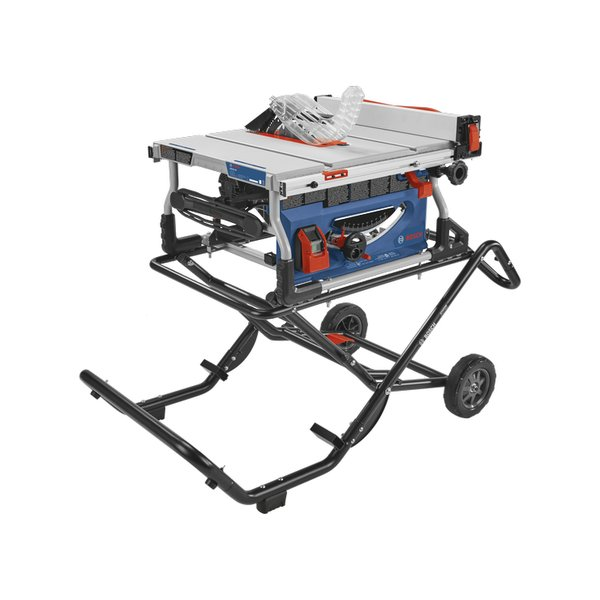

FEATURED DEAL
Amazon · Bosch pick · $100 off
Bosch GTS15-10 10″ Jobsite Table Saw with Gravity-Rise Wheeled Stand
Bosch’s 15 A, 10″ jobsite saw rips 32-1/8″ to the right of the blade, enough to split a full sheet of plywood down the middle. The rack-and-pinion fence moves with a hand knob and stays parallel, so you’re not tapping it into place. It has soft start, a brake that stops the blade in about three seconds, and Bosch’s Smart Guard system: a three-position riving knife, anti-kickback pawls and a see-through barrier guard. The Gravity-Rise stand has 8″ wheels and a foot release, so the 91 lb saw folds away against a garage wall when you need the floor space. Depth of cut is 3-9/16″ at 90°, which handles a 4×4 in one pass. $100 off list, shipped and sold by Amazon.
SHOP PRICE: $549
LIST: $649